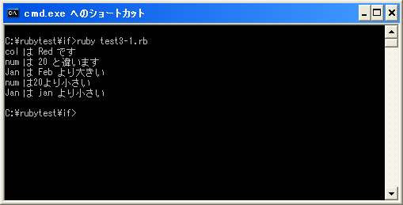

関係演算子
if文などの条件分岐の時には条件式の内容が真か偽かによって処理を分けます。条件式には「xxxと等しい」とか「xxxよりも大きい」などを指定することになります。この条件式の中で使用されるのが関係演算子(比較演算子とも言います)です。
まずはRubyで用意されている関係演算子の種類を確認します。
| 演算子 | 記述例 | 意味 |
|---|---|---|
| == | a == b | bがaに等しい |
| != | a != b | bがaに等しくない |
| > | a > b | bよりaが大きい |
| >= | a >= b | bよりaが大きいか等しい |
| < | a < b | bよりaが小さい |
| <= | a <= b | bよりaが小さいか等しい |
関係演算子は実際には左辺側のオブジェクトのメソッドです。StringクラスやIntegerクラス、Floatクラスで定義されています。
左辺と右辺のオブジェクトが持つ数値や文字列を比較し等しいか等しく無いか、また大きいか小さいかなどを比較できます。(オブジェクトそのものが同一かどうかを比較するわけではありません)。
左辺 演算子 右辺
比較した結果として真(true)または偽(false)を返します。
等しいかどうかの比較
演算子の左辺と右辺が等しいかどうかを比較するには「==」演算子を使用します。
num = 18
if num == 20 then
print("num は 20 と等しい")
end
val = "Red"
redcolor = "Red"
if val == redcolor then
print("col は Red です")
end
まず変数「num」に代入されている数値と数値の「20」を比較しています。数値の値が異なるため条件式は偽(false)です。また次に変数「val」に代入されている文字列と変数「redcolor」に代入されている文字列が比較されます。同じ文字列ですので条件式は真(true)です。
文字列が比較されている時、オブジェクトとオブジェクトが同じかどうかを比較しているわけではありません。文字列オブジェクトが持つ文字の集まりが同じかどうかを比較しています。数値オブジェクトも同じですが、数値オブジェクトの場合には数値が同じ場合には全て同じオブジェクトとなります。
次に等しく無いかどうかを比較するには「!=」演算子を使用します。
num = 18
if num != 20 then
print("num は 20 と違います")
end
val = "Red"
redcolor = "Red"
if val != redcolor then
print("col は Red と違います")
end
変数「num」に代入されている数値と数値の「20」を比較しています。数値の値が異なるため条件式は真(true)です。また次に変数「val」に代入されている文字列と変数「redcolor」に代入されている文字列が比較されます。同じ文字列ですので条件式は偽(false)です。
大きいかどうかの比較
演算子の左辺と右辺の大きさを比較するには「>」「>=」「<」「<=」を使用します
num = 18
if num > 20 then
print("num は 20 より大きい")
end
val = "Jan"
if val > "Feb" then
print("Jan は Feb より大きい")
end
大きさを比較する場合、数値の場合は数値の大きさを比較します。文字列の場合は比較する2つの文字列をアルファベット順に並べて比較します。「a」は「b」よりも小さく「A」は「a」よりも小さいです。
上記の場合、変数「num」に代入されている数値と数値の「20」を比較しています。変数の値が「20」よりも小さいため条件式は偽(false)です。また次に変数「val」に代入されている文字列と「Feb」を比較しています。「J」は「F」よりも大きいですので条件式は真(true)です。
実際の例は省略しますが「<」演算子を使った場合は「>」演算子を使った場合と逆になります。左辺が右辺よりも小さい場合に真(true)となります。
「>=」や「<=」のように「=」が付く場合はそれぞれ「大きいか等しい」「小さいか等しい」場合に条件式が真(true)となります。
サンプルプログラム
では簡単なプログラムで確認して見ます。
#! ruby -Ku
require "kconv"
num = 18
if num == 20 then
print(Kconv.tosjis("num は 20 と等しい¥n"))
end
val = "Red"
redcolor = "Red"
if val == redcolor then
print(Kconv.tosjis("col は Red です¥n"))
end
if num != 20 then
print(Kconv.tosjis("num は 20 と違います¥n"))
end
if val != redcolor then
print(Kconv.tosjis("col は Red と違います¥n"))
end
num = 18
if num > 20 then
print(Kconv.tosjis("num は20より大きい¥n"))
end
val = "Jan"
if val > "Feb" then
print(Kconv.tosjis("Jan は Feb より大きい¥n"))
end
if val > "jan" then
print(Kconv.tosjis("Jan は jan より大きい¥n"))
end
if num < 20 then
print(Kconv.tosjis("num は20より小さい¥n"))
end
if val < "Feb" then
print(Kconv.tosjis("Jan は Feb より小さい¥n"))
end
if val < "jan" then
print(Kconv.tosjis("Jan は jan より小さい¥n"))
end
上記のプログラムを「test3-1.rb」として保存します。文字コードはUTF-8です。そして下記のように実行して下さい。

( Written by Tatsuo Ikura )

著者 / TATSUO IKURA
初心者～中級者の方を対象としたプログラミング方法や開発環境の構築の解説を行うサイトの運営を行っています。